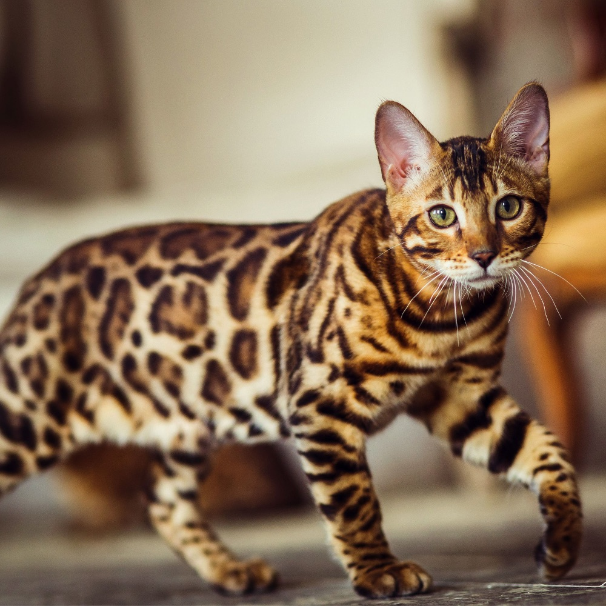
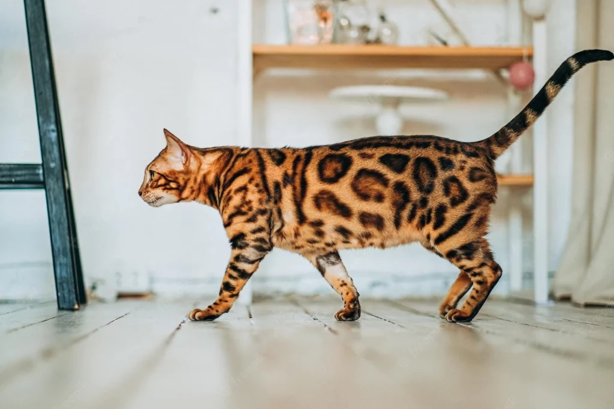
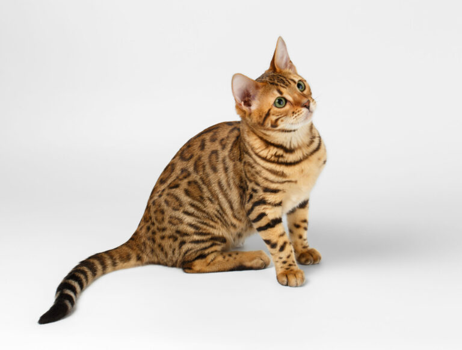
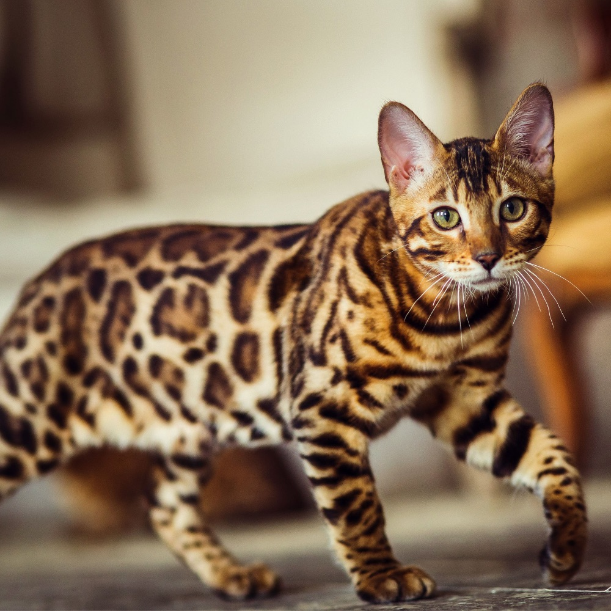
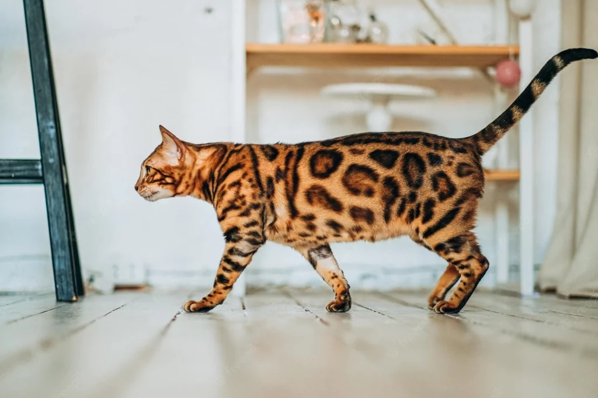
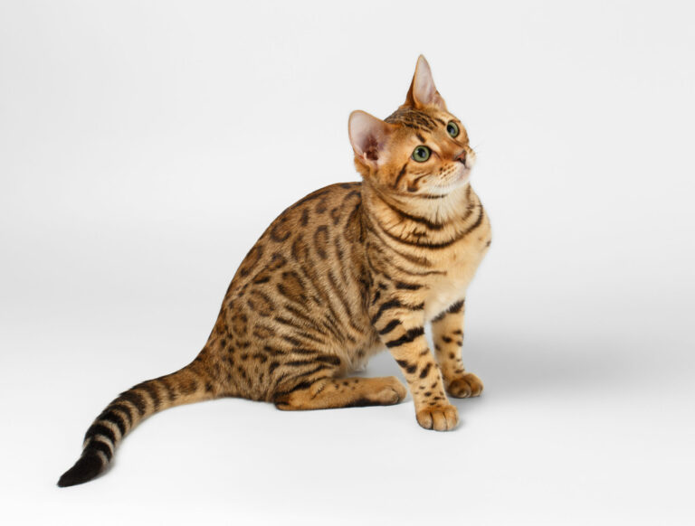

Koty bengalskie
Koty bengalskie wygladaja jak male tygrysy
Tutaj mozna sobie o tych kotkach poczytac| kot1 | kot2 | kot3 | kot4 | kot5 | kot6 |
| tak się prezentują: | |||||

|
 |  |  | ||
| kot1 | kot2 | kot3 | kot4 | kot5 | kot6 |
| tak się prezentują: | |||||
|
|
 |  |  | ||